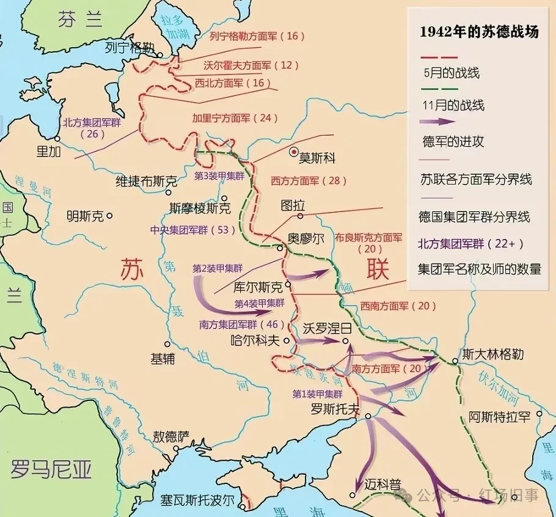
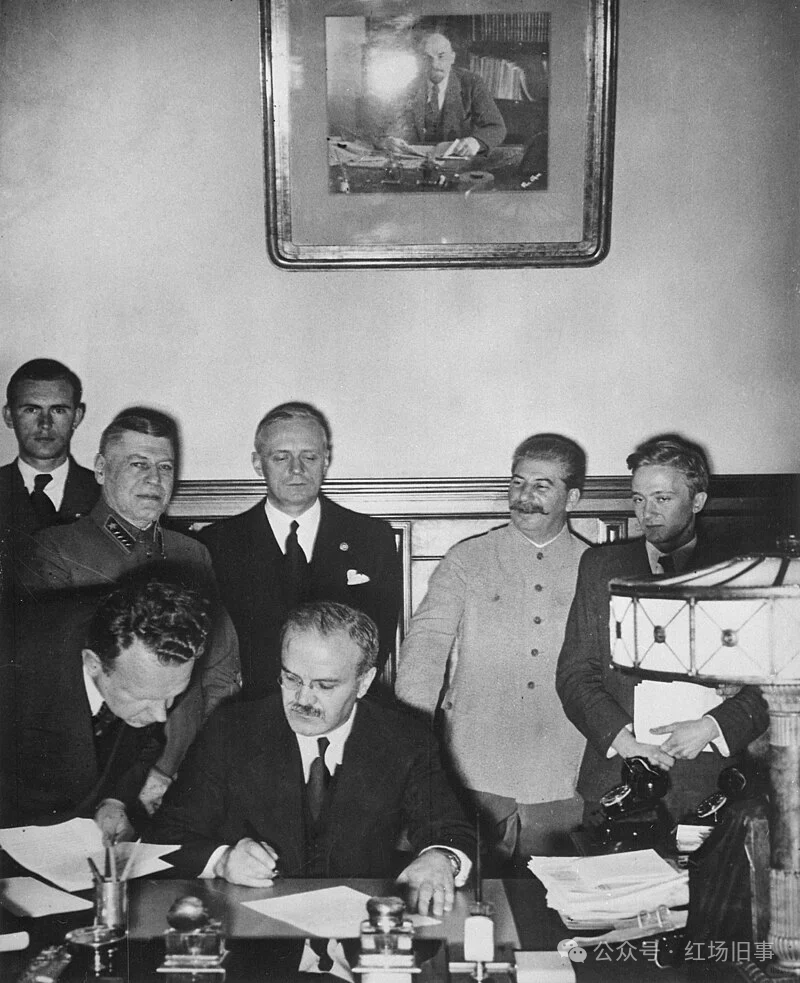
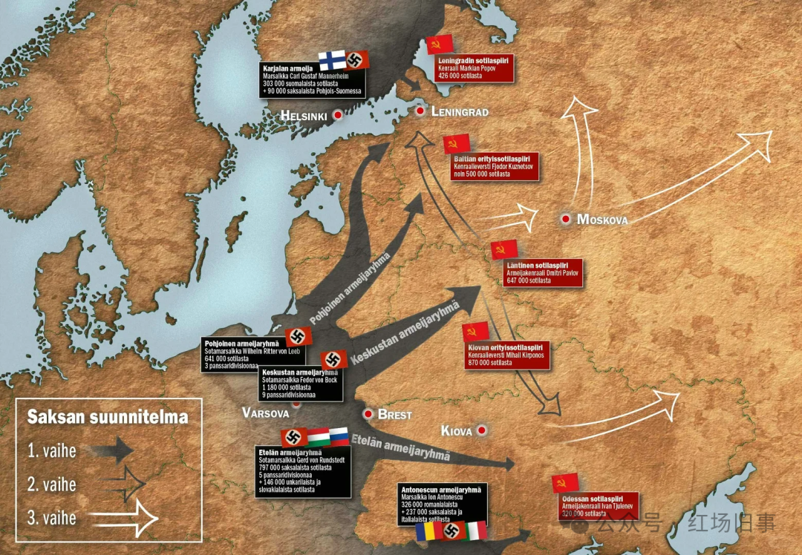
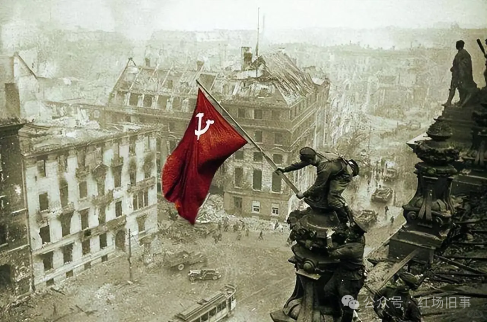

600份情报、1份致命误判、2000万条生命：1939-1941年斯大林的战略赌博
文字与图片版权归各自权利人所有。 查看公众号原文 ↗
1941年6月22日凌晨4时，希特勒撕毁条约，550万大军从波罗的海到黑海全线压境。几小时内，66个机场被炸、1200架飞机未起飞即毁，西部防线土崩瓦解。斯大林把自己关在别墅里，整整十一天没有出现在公众面前。就在22个月前，他还在克里姆林宫举杯，与里宾特洛甫庆祝“德苏友谊”。他用46万平方公里领土换来他以为的两年备战时间，换来的却是战争第一天损失战机占全军四分之一。这不是命运捉弄。这是一场由瓜分盛宴、扩张狂想与致命误判共同酿成的战略灾难。

1939年8月23日深夜，克里姆林宫。莫洛托夫与里宾特洛甫分别在两份文件上签字。斯大林全程在场。公开条约是标准的互不侵犯文书——互不攻击、不与第三方结盟反对对方，有效期十年。

苏联外长莫洛托夫签署《苏德互不侵犯条约》真正的交易藏在一页附加议定书里，俄语原文仅两页半。“一旦波罗的海国家所属地区发生领土和政治变动，立陶宛北部边界将是德苏利益范围界限”；“一旦波兰国家发生领土和政治变动，双方势力范围沿那累夫河、维斯瓦河、桑河划分”；“苏联强调它对比萨拉比亚的兴趣，德国声明完全无兴趣”。这份议定书没有有效期。它是写给征服者看的，不是写给外交官看的。苏联否认其存在直至1989年，正式承认则是1992年——条约签署53年后。九天后，德军闪击波兰西境。9月17日，苏军从东面开入，宣称“保护西乌克兰和西白俄罗斯同胞”。波军腹背受敌，流亡政府33年后才得以回国。卡廷森林的万人坑，此时已在不远处等待。瓜分波兰只是开胃菜。
二、“东方战线”：46万平方公里与虚假的安全感从1939年9月到1940年8月，苏联在不到一年内完成了欧洲史上最快的领土扩张之一。芬兰战役最先暴露问题。1939年11月30日，苏军以30个师进攻芬兰，预计数周拿下。结果：曼纳海姆防线苦战105天，苏军伤亡近40万，仅获得卡累利阿地峡和汉科租借地。红军在欧洲最小国家面前暴露了大清洗后的致命伤——军官不会打仗，士兵不知为何而战。1940年6月，行动陡然加速。苏联照会波罗的海三国，要求“改组政府、自由通行”。德军忙于西线，柏林回复“无疑义”。立陶宛、拉脱维亚、爱沙尼亚先后成立苏维埃政府，8月正式加入苏联。同月，苏联向罗马尼亚发出最后通牒——“归还”比萨拉比亚，“移交”北布科维纳。后者从未在沙俄版图内，斯大林临时加上去——“作为罗马尼亚统治比萨拉比亚22年的赔偿”。布加勒斯特24小时内屈服。至此，“东方战线”建成。新增领土46万平方公里，人口2200万，国界西推300至400公里。但这是防线，还是诱饵？更长的边界需要更多兵力防守。1941年，新边境线有大量地段尚未构筑工事，而原斯大林防线部分被废弃。德军入侵时，许多新占领区居民并不视苏军为解放者——波罗的海三国部分民众把德军当“救星”，配合党卫军清洗犹太人。每一公里新增领土，都意味着一个潜在的敌后游击区。苏联史学家几十年称赞东方战线“改善了战略地位”。档案解密的结论是：它让苏联在心理上出现了危险的松动。
三、情报如山，但领袖说“不”1941年春天，斯大林案头的情报已构成完整拼图。1月初，苏联驻德武官图皮科夫发回密电：德国对苏作战计划已定，时间不晚于今年。斯大林批示：“把这份英国人的假情报还给发件人。”3月20日，情报总局局长戈利科夫呈送综合报告：德军分三路进攻，预定5月20日开战。戈利科夫太清楚斯大林的想法，在结论栏写道：“上述传闻应视为英国甚至德国情报机构的假情报。最可能的开战时间是德国战胜英国之后。”4月3日，丘吉尔亲笔信经苏联驻伦敦大使转交。这位反共二十年的老对手警告：德军正东调，请予重视。斯大林对莫洛托夫说：“你看，英国人又想祸水东引。”5月12日，东京。佐尔格发出特急电报：6月22日德军将全面进攻苏联，三路战略方向与兵力部署均已查明。这是佐尔格谍报生涯最精确的一封。斯大林骂他：“这个爱说假话的家伙，怎么不去编小说？”6月13日，国防部长铁木辛哥请求西部军区进入一级战备。斯大林否决：“不要授人以柄，给希特勒挑衅的借口。”六天后，塔斯社奉命发表声明，称“德国企图撕毁条约、进攻苏联的传闻毫无根据”，是“那些敌视苏德、热衷战端的人的不轨企图”。6月21日深夜，一名越境的捷共党员报告：德军明晨4时进攻。斯大林仍将信将疑，指示边防部队“不要受任何挑衅影响”。6月22日凌晨3时30分，德军的炮弹落进布列斯特要塞。前线指挥官打电话到莫斯科请求开炮还击，得到的答复是：“你发疯了？为什么不通过外交途径解决？”
四、误判根源：恐惧、清洗与认知闭环斯大林为何对铺天盖地的情报视而不见？第一层：理性计算的谬误。斯大林深信希特勒不会重犯两线作战的错误。他的逻辑链条是：德国尚未击败英国，此时进攻苏联等于重开东线战场——这不符合德意志军事传统，更不符合理性决策。他把自己的算计方式，套在了希特勒头上。第二层：历史经验的遮蔽。1938年慕尼黑阴谋的阴影太深。斯大林始终怀疑：英德是否在合演双簧？西边传来的所有警报，会不会是把苏联拖入战争、坐收渔利的圈套？丘吉尔越是热心地“提醒”，斯大林越觉得黄鼠狼给鸡拜年。第三层——也是最重要的：大清洗的“回旋镖”。1937-1938年，红军约3.5万名军官被清洗，五元帅去三，全军近八成师团长是新提拔。总参谋部情报总局局长戈利科夫是踩着前任的血爬上去的——他的前任因“提供不实情报”被处决。1963年，退休的戈利科夫重读自己1941年3月的报告，对采访者说：“所叙述的一切情报都是正确的。但结论……没有意义。因为结论必须那么写。”说真话的风险远高于说错话的风险——这是大清洗留给苏联决策体系最致命的遗产。当体制将领袖神化，所有信息在送达最高处之前，已被层层过滤成“领袖想听的话”。于是，600份警告敌不过一句“他不会”。
五、1941年6月22日：迷雾散尽战争第一天统计数字：西部军区66个机场遭轰炸，半天损失战机约1200架，其中近900架整整齐齐排在跑道上——因为“避免挑衅”的命令，禁止分散部署。

巴巴罗萨行动通讯中断。指挥瘫痪。边境军区司令们还在等“不许还击”禁令解除。莫斯科于7时15分下达“猛烈反击”命令，两小时后根据“敌人已被击退”的错误报告下令“转入反攻”——而此时前线部队正在溃退或突围。斯大林错误判断形势的直接后果，是战争前五个月苏军减员约380万，相当于开战前总兵力的三分之二。1941年11月7日，德军距莫斯科不到100公里。斯大林站在列宁墓上发表演说，开场第一句：“同志们，红军战士们……”他没有提8月23日那个夜晚，没有提那份他以为能换来两年和平的条约，没有提他亲手批准吞并的46万平方公里。他只是说：我们不会投降。
六、结语：谁为迷雾买单？1945年5月，柏林国会大厦飘扬红旗。斯大林以胜利者姿态站在雅尔塔和波茨坦，拿到比1939年秘密议定书更广阔的势力范围。

但这不意味着1939-1941年的判断是正确的。苏联用40万苏芬战争伤亡、战争头两天损失两个空军集群、从布列斯特到莫斯科1000公里土地、超过2000万条生命——为“东方战线”与巴巴罗萨误判付出了最终账单。这份账单的真正收款人，不是希特勒，而是那一套让600份情报失效、让情报局长不敢署名反对、让决策者活在信息茧房里的权力模式。1941年6月22日之前，斯大林相信领土等于安全、条约束缚敌人、理智战胜疯狂。历史证明他三样全错。真正的安全从不来自国界向外推几百公里，而来自对真实世界的清醒认知，以及容许说真话的制度空间。当所有信息都需通过领袖喜好的滤网，“战前迷雾”就注定会反复降临。
1939-1941不是斯大林的意外失误。它是大清洗之后，必然到来的季节。